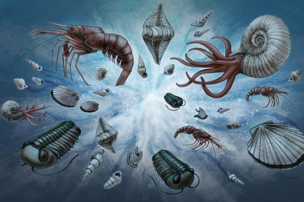
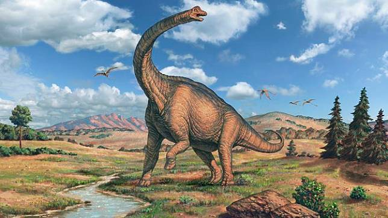
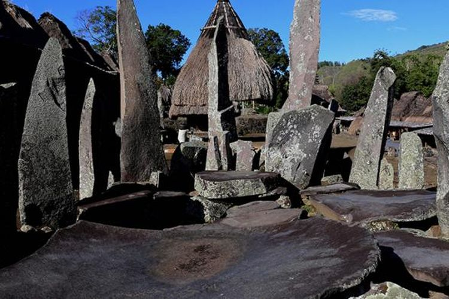

Permulaan
Bumi terbentuk sekitar 4,54 miliar (4,54×109) tahun yang lalu melalui akresi dari nebula matahari. Pelepasan gas vulkanik diduga menciptakan atmosfer tua yang nyaris tidak beroksigen dan beracun bagi manusia dan sebagian besar makhluk hidup masa kini. Sebagian besar permukaan Bumi meleleh karena vulkanisme ekstrem dan sering bertabrakan dengan benda angkasa lain. Sebuah tabrakan besar diduga menyebabkan kemiringan sumbu Bumi dan menghasilkan Bulan. Seiring waktu, Bumi mendingin dan membentuk kerak padat dan memungkinkan cairan tercipta di permukaannya. Bentuk kehidupan pertama muncul antara 2,8 dan 2,5 miliar tahun yang lalu. Kehidupan fotosintesis muncul sekitar 2 miliar tahun yang lalu, nan memperkaya oksigen di atmosfer. Sebagian besar makhluk hidup masih berukuran kecil dan mikroskopis, sampai akhirnya makhluk hidup multiseluler kompleks mulai lahir sekitar 580 juta tahun yang lalu.
Periode Kambrium
Letusan Kambrium atau radiasi Kambrium (bahasa Inggris: Cambrian explosion) adalah peristiwa kemunculan filum-filum utama yang relatif cepat ("cepat" dalam artian ini mencakupi periode jutaan tahun) sekitar 530 juta tahun yang lalu.
{kind=link}
Kemunculan tersebut lalu diikuti oleh diversifikasi organisme-organisme lainnya, seperti hewan, fitoplankton dan kalsimikroba. Sebelum 580 juta tahun yang lalu, sebagian besar organisme berbentuk sederhana dan terdiri dari sel-sel individu yang kadang-kadang tersusun sebagai koloni. Tujuh puluh atau delapan puluh juta tahun kemudian, evolusi mengalami percepatan dan keanekaragaman hidup mulai mirip dengan sekarang. Terjadinya peristiwa ini ditunjukkan melalui catatan fosil.
Periode Jura
Jura (Bahasa Inggris: Jurassic) adalah suatu periode utama dalam skala waktu geologi yang berlangsung antara 201,3 juta tahun hingga 145 juta tahun yang lalu, setelah periode Trias dan mendahului periode Kapur. Lapisan batuan yang mencirikan awal dan akhir periode ini teridentifikasi dengan baik, tetapi waktu tepatnya tidak dapat dipastikan antara 5 hingga 10 juta tahun. Jura merupakan periode pertengahan era Mesozoikum, yang dikenal juga dengan "Zaman Dinosaurus". Awal periode ini ditandai dengan peristiwa kepunahan Trias-Jura.
{kind=link}
Nama periode ini diberikan oleh Alexandre Brogniart berdasarkan banyaknya batu kapur laut yang ditemukan di Pegunungan Jura, di daerah pertemuan Jerman, Prancis, dan Swiss yang di mana strata batu kapur dari periode tersebut pertama kali diidentifikasi. Pada masa awal Jura, Superkontinen Pangaea telah mulai terbagi menjadi dua daratan besar: Laurasia di utara, dan Gondwana di selatan. Hal ini menciptakan lebih banyak garis pantai dan mengubah iklim benua yang sebelumnya kering menjadi lembab. Dan banyak gurun yang terdapat di Periode Trias tergantikan oleh hutan hujan yang rimbun.
Masa Paleolitikum
{kind=link}
Paleolitikum atau Palaeolitikum atau Palæolitikum, disebut juga Zaman Batu Tua (dari bahasa Yunani palaios - tua, lithos - batu), adalah periode dalam prasejarah yang dibedakan dengan perkembangan asli alat-alat batu yang mencakup 99% dari periode prasejarah teknologi manusia. Ini meluas dari penggunaan alat batu paling awal yang diketahui oleh hominin 3,3 juta tahun yang lalu, hingga akhir Pleistosen.
Umat manusia secara bertahap berevolusi dari anggota awal genus Homo—seperti Homo habilis, yang menggunakan perkakas batu sederhana—menjadi manusia modern secara anatomis serta manusia modern secara perilaku pada zaman Paleolitik Atas. Selama akhir Zaman Paleolitik, khususnya Zaman Paleolitik Tengah atau Atas, manusia mulai menghasilkan karya seni paling awal dan terlibat dalam perilaku keagamaan atau spiritual seperti penguburan dan ritual. Kondisi selama Zaman Paleolitik melewati serangkaian periode glasial dan interglasial di mana iklim secara berkala berfluktuasi antara suhu hangat dan dingin. Data arkeologi dan genetik menunjukkan bahwa sumber populasi manusia Paleolitik bertahan hidup di daerah berhutan jarang dan tersebar melalui daerah dengan produktivitas primer yang tinggi sambil menghindari tutupan hutan yang lebat.